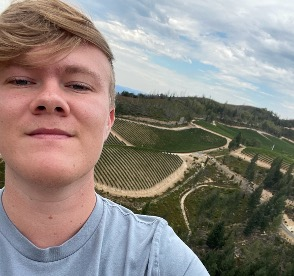
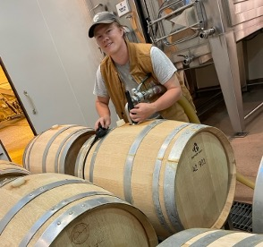

Martin Williams (Will) Jenkins is a young and inspired winemaker from the Seneca Lake town of Dresden.
Will is bringing winemaking experience from working around the world back to his home region of the Finger Lakes.
In 2023, Will Jenkins graduated from FLCC's Viticulture and Wine Technology program, where he gained a foundation in winemaking tecniques within the region he calls home.
Building on this strong foundation, Will sought out immersive experiences through internships in California’s iconic wine regions: Napa Valley and Sonoma. Spending time at several well-known wineries like Peter Michael Winery and Hirsch Vineyards, he honed his skills by working alongside master winemakers learning the craft of ultra-premium winemaking. These hands-on experiences allowed him to bring a broader perspective back to the Finger Lakes, inspiring new approaches to winemaking.
Upon returning, he became part of an alternating proprietorship with Ria’s Wines, collaborating with like-minded artisans and taking part in a vibrant winemaking community. This opportunity gave Will a chance to start his own label, and craft his own wine. Thus became the birth of Chaos Cellars.
At Chaos Cellars, we’re committed to pioneering new and exciting wines—crafted with care, quality, and creativity. Our goal is to explore the potential of the Finger Lakes region while bringing a fresh perspective from our winemaker’s time in California. We strive to make wines that balance tradition with innovation, delighting wine lovers and challenging expectations. Every bottle we produce reflects our passion for creating unique, premium wines that honor our roots while embracing the future.